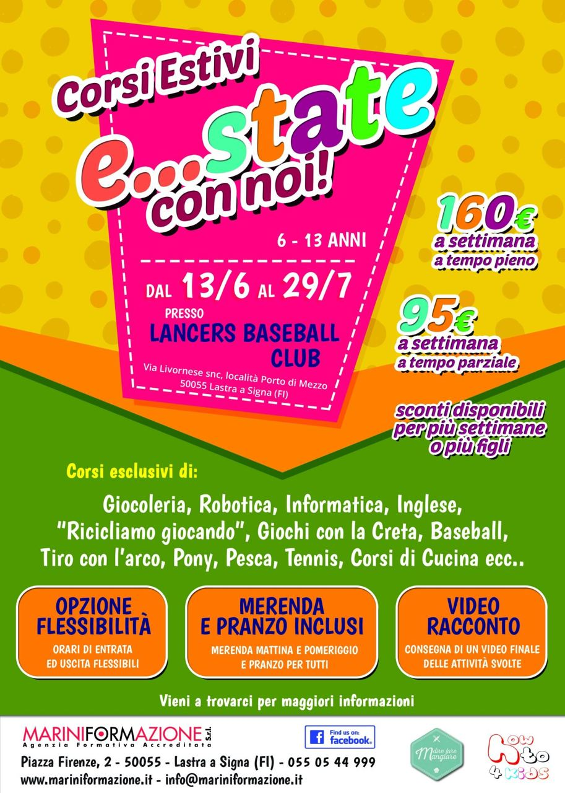

“E…state con noi!” sono corsi estivi rivolti a bambini dai 6 ai 13 anni che si svolgeranno presso il Lancers Baseball Club a Lastra a Signa. Gli esclusivi corsi proposti spaziano in diverse discipline: la giocoleria, la robotica, l’informatica, l’inglese, il baseball, il tiro con l’arco,il pony, la pesca, il tennis, i corsi di cucina e molto altro ancora!
Perché scegliere E…STATE CON NOI per i vostri figli?
I corsi estivi da noi proposti sono pensati con uno spirito nuovo rispetto ai centri estivi tradizionali perché vogliono offrire non solo attività ludico-motorie fini a se stesse ma in grado di offrire esperienze significative che stimolino la fantasia, la creatività e l’attività sportiva accompagnando il percorso di crescita ai bambini che vi parteciperanno.
La scelta e l’impostazione delle attività svolte hanno quindi come obiettivo principale quello di fornire un’occasione per sviluppare competenze e conoscenze importanti da capitalizzare oltre quello di creare un ambiente sereno, costruttivo e sicuramente di livello capace di offrire divertimento e svago durante la pausa estiva.
Molto importanti anche le formule e le agevolazioni proposte:
– OPZIONE FLESSIBILITA’ orari di entrata e uscita flessibili per agevolare mamme e papà
– MERENDA E PRANZO INCLUSI
– VIDEO RACCONTO di fine percorso – tutti i bambini riceveranno un video che racconterà la loro esperienza!
Sconti disponibili:
Sconto famiglia per chi iscrive più di un figlio
Sconto periodo per chi si iscrive a più di una settimana
Periodo di svolgimento dei corsi estivi:
13-18 giugno
20-25 giugno
4-8 luglio
11-15 luglio
18-22 luglio
25-29 luglio
Orario Opzione Flessibilità
8.00/16.00 – giornata intera opzione 1 7.00-8.00
8.00/13.00 – mattina opzione 2 16.00-17.00
opzione 3 13.00.14.00 (pranzo incluso nel prezzo)
Iscrizioni
Le iscrizioni possono essere effettuate entro il lunedì della settimana precedente l’inizio del corso estivo.
Prezzi
€ 95,00 a settimana tempo parziale
€ 160,00 a settimana tempo pieno